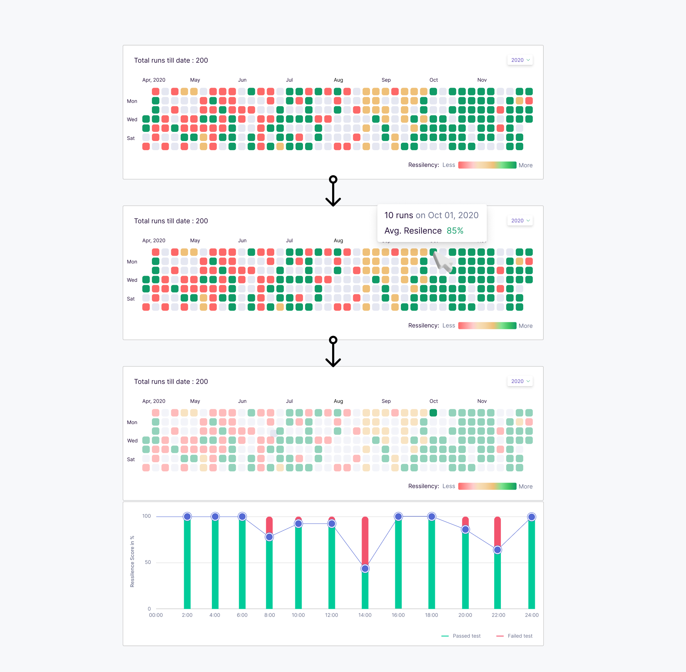

Heatmap in LitmusChaos
Browse workflow analytics in a better way.
The problem
Using plotly library to visualise the analytics of workflow was not receiving a great feedback from UI as well as UX perspective, however the plotly graphs were best to visualise the analytics of workflow for development purposes because the plotly UX was passing all the test cases needed for chaos workflows. So I took the mission to find something better which will be easy to develop and good for UX also.
Challenges
Generally our standup agendas used to go in this manner like I used to present a design and developers used to review like can this design pass all their test cases. So in standups I used to present designs but when a dozen of smart developers sit together they tend to give unique test cases and my design was getting failed, so I thought the other way round lets take all of their test cases and make a design and the results came out pretty good.
Approaching Better Solutions
The plotly visualisation of workflow analytics looked like this
It has a major drawback, for a recurring workflow the number of bars will keep on increasing on x-axis and these bars will become very thin lines. Each bar represents the results of a workflow run and with this approach when there will be hundred of run the bars will become so thin that users can’t see the results. Users will need to pan and zoom in to view the results which may make the users frustrated to find a particular workflow run.
With all these problems I was trying to find better visualisation process, I gone through various graphs found at visx library which had good UX however I also needed to pass the designs through the developers test cases. I came across someone’s Github activity and browsing through the Github heatmap, idea struck my head and created a design and found that the design can pass all the test cases provided to me.
Each cell represents the workflow runs on that day of the year. Hovering on a cell shows the average resiliency score of all the workflow runs on that day and on clicking on the cell the familiar bar graph opens but in one day an user can run maximum 24 workflow so it was easy to accomodate on x-axis 24 bar graphs
Results
Before the standup I showed the design to developers however I didn’t explain my thought process. The developers took the design and presented it to our Project Manager and they explain the design themselves without my intervention. It was first time that without my explanation developers understood the design just by seeing it and I reliased this UX is good because if an user understands easily with almost no help then it means the design is good.
Conclusion
The conclusion I drawn was I need to think out of box sometimes that doesn’t mean I need to completely provide a new UX which no users has used previosly. Whenever we think about visualisation we think about lines, areas, radial, charts etc. but tackling our problem with Github heatmap design was something out of the box also as this heatmap UX is very familiar to most developers and our userbase is also mostly developers it will be a good thing to visualise the workflow analytics with heatmaps.